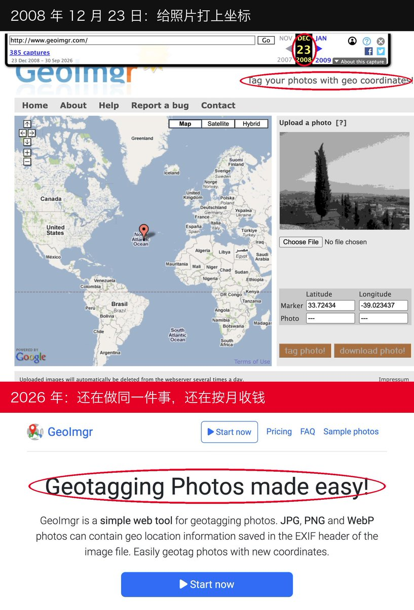
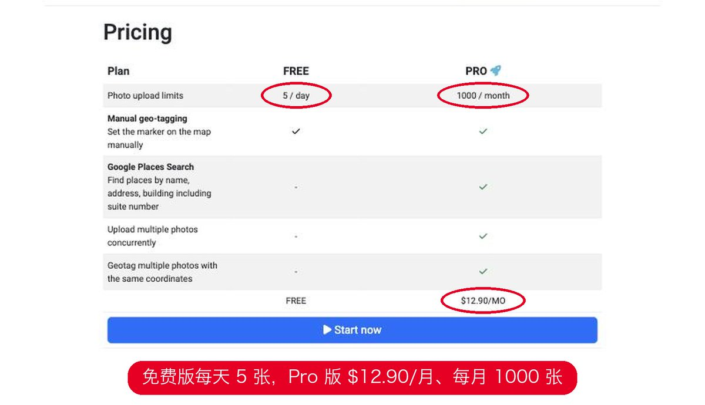
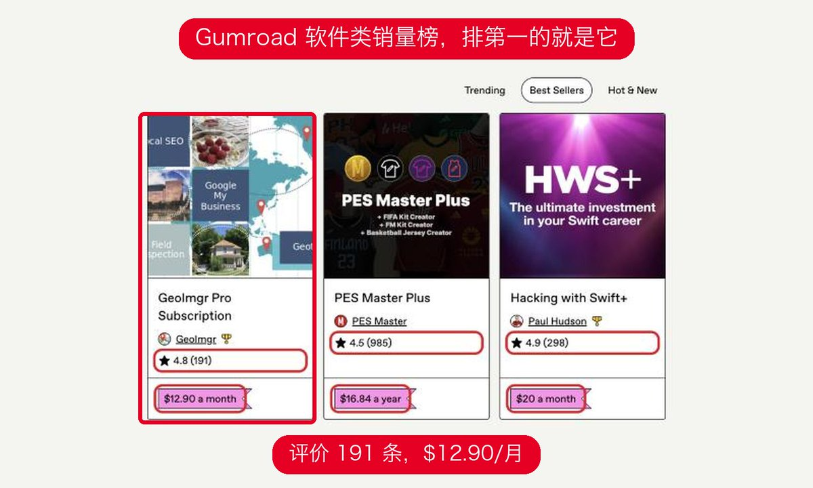

不是吧！出海真值得思考
就这样一个给照片加定位的小工具，做了快 18 年，现在居然还在按月收费！
最近逛 Gumroad 销量榜，翻到一个叫 GeoImgr 的产品，越看越有意思。
功能简单得离谱，就干一件事：给照片写入 GPS 坐标。
免费版每天 5 张。
订阅pro每个月$12.9，每月可处理1000张，支持批量处理，地址搜索。
看下光 Gumroad 上就有 191 条评价。
有意思的是，我翻了下网页存档，发现它早在 2008 年就在做这件事了。
快 18 年过去，网站依旧朴素得不行，功能也没搞得多复杂。
细分需求，简单工具，一套订阅收费模式，就这样做了快 18 年。
现在很多人都说，找新词，追 AI 潮流，恨不得把功能堆满。
有时回头看，这种养老级的小工具，也嘎嘎香！
把小需求解决好，成为一门长期生意。
也别把产品做复杂。
找到一群愿意持续付费的人，可能比追风口更重要。
大家觉得呢？


